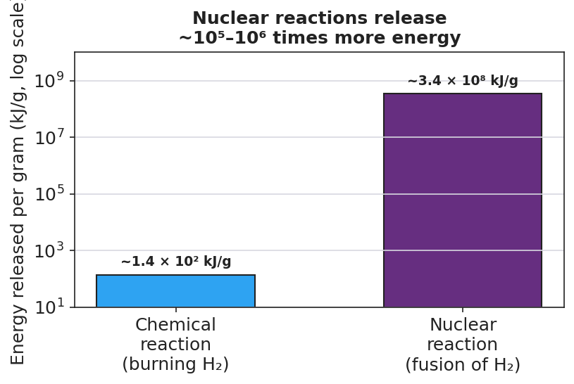

01 Phenomenon
The Sun has been shining for about 4.6 billion years — and no fuel truck ever refills it. On Earth, a nuclear power plant lights up a whole city, and a single fuel pellet the size of a fingertip holds about as much energy as a ton of coal. But the Sun and the power plant run on opposite nuclear processes. The Sun fuses small hydrogen nuclei into larger helium nuclei. The power plant splits large uranium nuclei into smaller fragments. Building up and breaking down — yet both release staggering amounts of energy.
02 Driving question
How can building nuclei up (fusion) and breaking nuclei down (fission) both release enormous amounts of energy — and how do we keep track of every particle while a nucleus changes?
03 Notice & wonder
| I notice… | I wonder… |
|---|---|
Turn & Talk #1: Look at the two-panel figure your teacher is projecting (fission on the left, fusion on the right). The number of nuclei and their size change across the arrow. But something stays the same. In one sentence, name something that does not change from the left side of the arrow to the right side.
04 Initial model
Below is the fission of uranium-235 written as a nuclear equation, with one number missing. Each symbol is written as (mass number on top, atomic number on bottom).
²³⁵₉₂U + ¹₀n → ¹⁴¹₅₆Ba + ⁹²₃₆Kr + ___ ¹₀n
Use two rules to find the missing number of neutrons:
Mass numbers (top) must balance. Add the top numbers on the left: 235 + 1 = ______. Add the known top numbers on the right: 141 + 92 = ______. How many more mass units are needed on the right? ______ → that is the number of neutrons in the blank.
Atomic numbers (bottom) must balance. Add the bottom numbers on the left: 92 + 0 = ______. Add the bottom numbers on the right: 56 + 36 = ______. Do they already match? ______ (Remember: a neutron has atomic number 0.)
The missing number of neutrons is: ______
05 Investigate
Part 1 — ABCs: Build the models and count
Before naming any rules, build each process with your nucleon tokens (one color = proton, another = neutron) and count. Fill in the table.
| Process | Protons before | Protons after | Neutrons before | Neutrons after | Conserved? (yes/no) |
|---|---|---|---|---|---|
| Fission: U-235 + n → Ba + Kr + neutrons | |||||
| Fusion: H-2 + H-3 → He-4 + neutron |
What pattern do you notice about the totals before and after the arrow?
Part 2 — Balance the nuclear equations
For each equation, find the missing particle. Use the Periodic Table for atomic numbers. Fill in the ledger (top = mass number, bottom = atomic number), then write the missing particle.
Equation A — alpha decay of uranium-238:
²³⁸₉₂U → ___ + ⁴₂He
| Mass number (top) | Atomic number (bottom) | |
|---|---|---|
| Left total | ||
| Known right (⁴₂He) | ||
| Missing particle |
Missing particle (symbol and element name): _______________
Equation B — beta decay of carbon-14:
¹⁴₆C → ___ + ⁰₋₁e
| Mass number (top) | Atomic number (bottom) | |
|---|---|---|
| Left total | ||
| Known right (⁰₋₁e) | ||
| Missing particle |
Missing particle (symbol and element name): _______________
Did the atomic number go up or down? _______________ Why?
Equation C — fusion (the D–T reaction, like the Sun):
²₁H + ³₁H → ⁴₂He + ___
| Mass number (top) | Atomic number (bottom) | |
|---|---|---|
| Left total | ||
| Known right (⁴₂He) | ||
| Missing particle |
Missing particle (symbol and name): _______________
Part 3 — Reading the energy-scale chart
Look at the figure your teacher is projecting:

Roughly how many times more energy does the nuclear reaction release than the chemical reaction (per gram)? _______________
Use the chart to explain why a fingertip-sized fuel pellet can hold as much energy as a ton of coal.
06 Make it make sense
For each item below, balance the nuclear equation and answer the question. These are the same reactions you modeled in the Investigation — confirm your work here.
1. Alpha decay of uranium-238. Find the missing nucleus.
²³⁸₉₂U → ___ + ⁴₂He
| Mass number (top) | Atomic number (bottom) | |
|---|---|---|
| Missing particle |
Symbol and element name: _______________ Is this natural or artificial transmutation? _______________
2. Beta decay of carbon-14. Find the missing nucleus.
¹⁴₆C → ___ + ⁰₋₁e
| Mass number (top) | Atomic number (bottom) | |
|---|---|---|
| Missing particle |
Symbol and element name: _______________ Did the atomic number go up or down? _______________
3. Fusion (D–T reaction). Find the missing particle.
²₁H + ³₁H → ⁴₂He + ___
| Mass number (top) | Atomic number (bottom) | |
|---|---|---|
| Missing particle |
Symbol and name: _______________ Did two nuclei merge into one, or did one split into two? _______________
07 Key vocabulary
- transmutation
- the change of one element into another caused by a change in the nucleus (a change in the atomic number); every nuclear equation in this lesson is a transmutation, and all conserve total mass number and total atomic number
- natural transmutation
- a transmutation that occurs spontaneously through radioactive decay, with no outside particle needed (e.g., the alpha decay of U-238 or the beta decay of C-14); the unstable nucleus changes on its own
- artificial transmutation
- a transmutation forced by bombarding a nucleus with a particle, such as the neutron that triggers U-235 fission in a reactor or particles fired in an accelerator; the change is induced, not spontaneous
Use each term in a sentence about today’s investigation. Do not copy the definition — describe something you actually did, built, or balanced.
transmutation: _______________________________________________ _______________________________________________
natural transmutation: _______________________________________________ _______________________________________________
artificial transmutation: _______________________________________________ _______________________________________________
08 Revise your model
Return to your Initial Model (the U-235 fission equation). Add vocabulary labels:
Label the equation as natural or artificial transmutation: _______________ (Hint: a neutron is fired at the nucleus to start it.)
Draw a box around the two totals that are conserved. Write them here: mass number ____ = ____ ; atomic number ____ = ____
Write a revised appositive sentence for the process:
Transmutation — _______________________________________________ — always conserves the total _______________ and the total _______________.
Then finish this Because / But / So sentence:
A fingertip-sized nuclear fuel pellet releases about as much energy as a ton of coal because __________________________________________, but __________________________________________, so __________________________________________.
09 Exit ticket
(a) Balance this alpha-decay equation for polonium-210. Find the missing nucleus and name the element.
²¹⁰₈₄Po → ___ + ⁴₂He
| Mass number (top) | Atomic number (bottom) | |
|---|---|---|
| Missing particle |
Symbol and element name: _______________
(b) One of these equations is fusion and one is fission. Label each, and justify your choice by what happens to the size of the nuclei.
Equation 1: ⁶₃Li + ²₁H → 2 ⁴₂He
Equation 2: ²³⁹₉₄Pu + ¹₀n → ¹³⁴₅₄Xe + ¹⁰³₄₀Zr + 3 ¹₀n
Equation 1 is ________________ because _______________________________________________
Equation 2 is ________________ because _______________________________________________
(c) In one appositive sentence (use dashes), explain why a nuclear reaction releases far more energy than a chemical reaction.
10 Explore further
- Fission vs. fusion model construction: Using paper nucleon tokens (small circles for protons in one color, neutrons in another) or magnetic manipulatives, students physically build the U-235 fission reaction and the H-2 + H-3 fusion reaction, then count nucleons on each side to confirm conservation. The schematic in `figures/fission_vs_fusion.png` is the reference model; students reproduce and extend it. No external URL required; a digital alternative is the PhET "Nuclear Fission" simulation or a Javalab nuclear-decay walkthrough for the decay models.
- Balancing nuclear equations practice: Students complete a structured set of nuclear equations (α decay of U-238, β decay of C-14, the U-235 fission equation, the D–T fusion equation) by solving for the missing particle using the two conservation rules (mass number balances; atomic number balances). Each equation is checked in a mass-number / atomic-number ledger.
- Energy-scale reading: Students interpret `figures/energy_scale_chemical_vs_nuclear.png` (a log-scale bar chart) to articulate *how much* larger nuclear energy release is than chemical — roughly a million-fold — and connect that to why a fingertip-sized fuel pellet rivals a ton of coal.